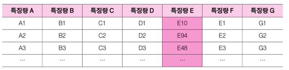
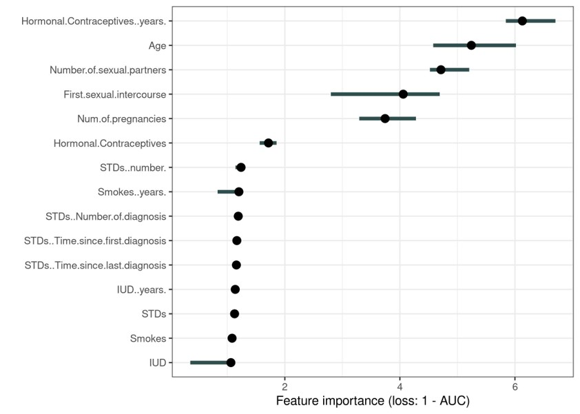
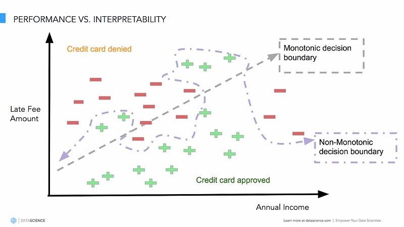
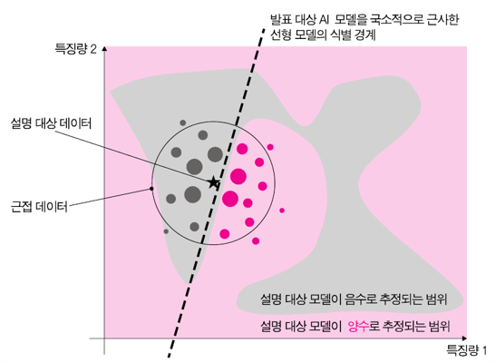
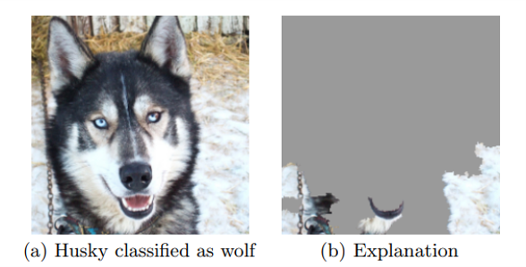
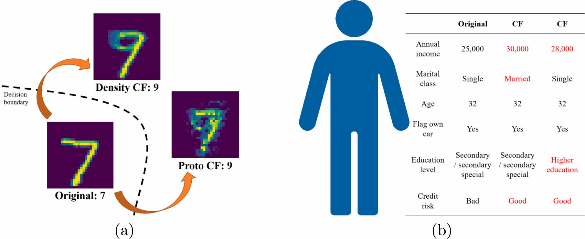

10 설명 가능한 알고리즘
박찬경 (경북대학교)
인간이 많은 결정을 인공지능의 자동적인 판단에 더 많이 의존하게 될 수록, 해당 판단이 문제를 발생시켰을 때, 그 도덕적, 법적 책임을 어떻게 분배할 것인가라는 문제가 첨예하게 제기된다. 어떤 입장은 새로운 주체로서 인공지능 스스로가 가지는 자체의 권리와 책임에 대해 논의하기도 하지만, EU의 신뢰할 수 있느 인공지능(Trustworthy AI)와 같이 현실주의적 접근에서는 인공지능을 설계하고, 배포하며, 이용하는 인간에게 그 책임성을 부과하는 입장을 보이기도 한다. 어떠한 입장을 취하든, 우리가 인공지능과 더욱 더 안정적으로 공존할 수 있기 위해서는, 우리는 인공지능의 판단 실패에 대해 어떻게 윤리적, 법적으로 대처해야 하는가 하는 문제를 해결해야만 한다. 단적으로, 자율주행 자동차에서 사고가났을 때, 그리고 무인 공격 무기가 오인 사격했을 때..이러한 문제는 결코 인공지능의 판단이 인간보다 오류를 덜 발생시켜서 문제가 되는 것이 아니다 (오히려 현실은 그 반대에 가깝다). 그러한 실패가 일어났을 때, 우리는 인간 사이에, 그리고 인간과 인공지능 사이에 책임을 어떻게 분배하는 것이 옳은지에 대한 합의에 도달하지 못하였다.
그런데, 책임의 분배에 앞서 먼저 해결되어야 하는 문제가 있다. 즉, 어디서 문제가 발생했는지를 알아야 한다. 일단 ’인식’하여야 ’도덕 판단’을 할 수 있다는 것은 자명하다. ’인식’의 문제는 ’도덕 판단’만큼인 어려운 문제다. 왜냐하면 예측력이 높을 수록 모형은 복잡해지기 때문이다. 따라서, 인공지능의 판단을 어떻게 설명할 것인가 하는 문제는 충분조건은 아닐지라도 필요조건이다.
사실 어떠한 판단, 또 자동 판단의 설명 요구는 새로운 일이 아니다. 왜냐하면, 예전에도 어떤 판단이 이루어졌을 때, 그에 대해 설명하라는 요구는 있었기 때문이다. 하지만, 인공지능은 그에 더하여 새로운 문제를 만들어낸다 (어떤..??) 이를 해결하는 위한 분야를 XAI라고 한다. 또 다시 원래 인간세계에 있었던 문제를 반복하면서 이를 더 복잡하게 만드는 패턴이 반복되고 있는 것 (차이와 반복.) -> 학제간 사고 방식
이 장에서는 XAI를 설명하고, 투명성, accountability, 기존의 설명 요구 법안과의 연관성 등이 설명될 것이다.
10.1 설명이 쉬운 알고리즘.
먼저, 인공지능의 근간이 되는 기계학습, 그 중에서도 지도학습(supervised learning) 방법은 분류(classification) 문제에 대해 복습해보도록 하자. 분류의 문제는 어떠한 특성(feature)을 이용해 타겟(target)을 예측하는 문제를 의미한다. 기계학습을 처음 배울 때 하는 이미지 특성을 이용해 개와 고양이를 자동으로 나누는 알고리즘, 손글씨 이미지를 이용해 숫자를 파악하는 알고리즘 같은 것들이 분류 알고리즘이다. 설명으 편의를 위해, 여기서는 그 보다 더 간단한 알고리즘을 생각해보자. 즉, 두 가지의 특성을 이용해 0 또는 1의 판단을 하는 알고리즘이다. 첫번째 특성을 \(X_1\), 두번째 특성을 \(X_2\)라고 하자. 그리고 예측하고자 하는 \(Y\)는 0 또는 1의 값을 갖는데, 이를 예측하고자 하는 것이다. 비근한 예로, 소득(\(X_1\))과 신용점수(\(X_2\))를 이용해 대출을 상환할 수 있는지(\(Y=1\)), 그렇지 않은지(\(Y=0\))를 판단하는 알고리즘을 만드는 상황 그런 경우이다.
이러한 경우에 적용할 수 있는 가장 간단한 분류 알고리즘 중 하나로 이야기되는 것 중 하나는 ’로지스틱 회귀’라는 방식이다. 이는 선형성을 갖는다.
로지스틱 회귀 그림
이를 수식으로 표현하면 다음과 같다. 그림으로 봐도, 수식으로 봐도, 즉시 설명이 가능하다. 그림에서 기울기에 해당하니까..
그런데, 이런 간단한 분류 방법이 늘 현실적이지는 않을 것이다. 가장 먼저, 저 경계선이 곡선인 경우도 허용하고 싶을 것이다. 다음과 같이… 그림
또, 다음과 같이 1로 예측되는 영역이 분리되어 있는 경우도 있을 수 있다.
그림
이는 로지스틱 회귀 분석과 같은 방법으로는 불가능하고, 이를 조금 더 복잡한 함수에 집어넣는다.
수식
이러한 방식 중 하나가 바로 우리가 잘 알고 있는 ’인공신경망(Artificial Neural Networks; ANN)이다. 이제 저 안에 들어가 있는 모수는 기울기라는 단순한 해석을 가지지 않는다. 정확히 말하면, 저 모수를 설명할 방법이 없다! 이를 blackboxedness라고 한다.
결론은 더 나은 예측을 위한 모형의 ’유연성(flexibility)’를 얻기 위해 모형은 더 복잡해져야 하며, 그 댓가로 설명가능성이 떨어진다는 것이다. 즉, 모형의 예측력과 설명가능성 사이에는 트레이드오프 관계가 성리하는 것이다!
분류 알고리즘 중에는 로지스틱 회귀 말고도 본질적으로 설명하기 쉬운 모형들이 있다. 예컨대 의사결정 나무 같은 것이 그렇다.
Decision Tree 그림
의사결정 나무 같은 것은 에전 인공지능 시대의 근간 이기도 했다. 그러나 현대적인 인공적인 인공지능에 사용하는 분류 알고리즘은 이를 믹스한 것. Random Forest같은 경우… 따라서 다음과 같은 트레이드 오프를 보일 수 있다.
일본 트레이드 오프 그림
10.2 설명 가는성을 높이는 기술: XAI
그렇다면, 예측력을 위해 우리는 설명을 포기해야 하는가? 그렇지 않다. 많은 인공지능 연구자들은 예측력과 복잡도를 보존하면서도 여전히 설명하기 위한 기술들을 개발하고 있다. 여기서 핵심적인 생각은, 에측을 위한 모형을 그대로 둔 채로, ’설명을 위한 장치’를 개발하는 것이다. ’설명가능한 인공지능(eXplainable AI; XAI)’라고 부르는 영역에서 활발하게 논의되고 개발되고 있는 모형들은 그 자체로 설명이 쉬운 기계학습 모형보다는, 예측모형에 더할 수 있는 설명 장치들이라고 할 수 있다.
이러한 설명 장치들도 몇 가지 유형으로 구분할 수 있다. 그 첫번째는 모형의존형(model-specific) 기술과 모형불문형(model-agnostic) 기술의 구분이다. 모형의존형 기술은 인공지능에 사용되는 예측 모형이 특수한 기술을 따를 때만 작동할 수 있는 모형 설명 기술이다. 예컨대, 영상/이미지 관련 인공지능에 자주 사용되는 CNN (Convolutional Neural Network)에서 작동하는 GRAD-CAM, Score CAM, Grad-CAM++ 등의 기술이 그것이다. 모형의존형 기술은 주예측모형의 작동 방식을 응용하여 만들어진 것이므로, 모형-맞춤형 설명이 가능하다는 장점이 있다. 그러나 이러한 모형들은 예측모형에 바로 응용할 수 없을 뿐만 아니라, 주모형과 직접 연동되어 작동하는 경우가 많아, 주모형의 속도를 느리게 하는 단점을 갖는 경우가 많다. 반면, 모형불문형 기술은 주모형과 독립적으로 설계되고 작동하기 때문에 범용성이 높고, 주모형의 퍼포먼스를 하락시키지 않는 경우가 많다. 이 때문에 최근이 개발 경향을 범용성 높은 모형불문형 기술을 개발하면서 설명력을 가능한 모형의존형 기술에 근접시키도록 하는 방향으로 발전하고 있다. 따라서, 이 장에서는 모형불문형 기술에 초점을 맞추어 기술할 것이다.
또 다른 구분으로는 전역적(global) 설명과 국소적(local) 설명 기술의 구분이 있다. 전역적 설명은 이용자가 복잡한 모형 전체의 구조를 이해할 수 있도록 단순화하는 방식을 의미하는 반면, 국소적 설명은 인공지능에 의해 내려진 특정한 판단의 이유를 제공하는 방식을 의미한다. 기게학습 모형을 이용하면서 이를 유지, 개선하기 위한 운용 목적이나, 보안상의 문제를 발생시킬 수 있는 외부 공격에 대해 강건한 모형을 만들기 위한 모니커링 목적으로는 전역적 설명이 자주 사용된다. 그에 반해, 인공지능이 내린 판단에 영향을 받는 일반 이용자들이, 예컨대 자동화된 대출 결정을 받거나, 국경에서 보안 검색의 대상이 되었을 때, 그러한 결정에 대한 설명을 요구하는 경우라면 모형 전체에 대한 설명은 일반인들에게 그다지 유용하지도 않을 것이며, 더 나아가 주어진 설명이 ’이해가능(interpretable)’하지 않을 수도 있다. 이러한 경우에는 특정 결정에 대한 국소적 설명이 더욱 유용할 수 있을 것이다.
10.3 대표적인 XAI 기술
XAI는 빠르게 발전하고 있는 분야이기 때문에, 지금도 새로운 기술이 계속해서 개발되고 있지만, 여기서는 대표적으로 알려진 몇 가지 기술을 중심으로 전반적인 개념을 이해하고자 한다. 최근에도 자주 인용되는 XAI 기술을 전역적, 국소적 설명의 구분 방식에 따라 일별해 보면 다음과 같다.
| 분류 | XAI 기술 | 특징 |
|---|---|---|
| 전역설명 | Partial Dependence Plot (PDP) | 특성의 변화가 기계학습 모델의 예측 결과에 반영되는 영향을 그래프로 표시 |
| Accumulated Local Effect (ALE) | 특성의 변화가 ‘평균적으로’ 예측 결과에 반영되는 영향을 표현한 것으로 PDP와 유사하지만, 조금 더 빠르게 계산 가능 | |
| Permutation Importance | 특성을 무작위로 재정렬해 모델 예측 오차가 증가하는 것을 관찰하는 방식으로 특성과 결과의 관계를 밝힘 | |
| Global Surrogate | AI모형의 예측 방식을 유사하게 학습한 해석가능한 모형으로 대리 설명. 의사결정 트리가 자주 사용됨 | |
| 국소설명 | Local Surrogate (LIME) | 이미지나 텍스트를 포함한 다양한 데이터에 대해 임의의 판별 AI모형의 예측을 선형 근사로 설명. |
| Shapley Additive exPlanations (SHAP) | 각종 데이터에 대응하는 AI모형의 예측에 대해 특성의 공헌도를 게임이론적 지표를 이용해 설명. | |
| 반사실적 설명 | 현재의 판단 결과를 바꿀 수 있는 가장 작은 특성값의 변화를 이용해 현재 판단 결과의 ‘원인’을 설명. |
10.3.1 전역적 설명
여기서는 Permutation Importance 방식과 Global Surrogate에 대해서 이야기 해 보도록 하겠다. Permutation Importance는 많은 전역적 설명 방식과 유사하게, 예측 결과를 도출하기 위한 근거가 되는 특성(feature)들의 상대적 중요도(importance)를 계산하는 것을 목표로 한다. 설명 방식은 다음과 같다. 가장 먼저, 중요도를 측정하기 위한 특성을 먼저 선택한다. 그 다음 다른 특성의 값들은 주어진 데이터 그대로 둔 채, 선택된 특성값만을 무작위로 재배열한다. 이를 그림으로 표현하면 다음과 같다.
 모든 다른 특징량은 1, 2, 3 등 원데이터에 주어진대로 배열되어 있지만, 중요도를 측정하고자 하는 특징량 E는 무작위 배열되어 10, 94, 48와 같이 규칙을 갖지 않는 순서로 재배열되어 있다. 이제 이렇게 (특징량 E만) 변형된 데이터를 이용해 설명하고자 하는 모형을 추정한다. 모든 모형 추정은 ‘오류율’을 생산하는데, 이렇게 변형된 데이터를 바탕으로 한 모형의 오류율과, 변형하지 않은 원 데이터를 바탕으로 추정한 같은 모형의 오류율을 비교해보면 전자의 오류율이 클 것이다. 이는 위의 예에서 특징량E에 포함된 예측에 사용되어야 할 유용한 정보를 무작위 배열을 통해 삭제한 것이나 다름 없기 때문에, 더 적은 정보(변형된 데이터)를 가지고 추정한 모형이 더 많은 정보(원데이터)를 이용해 추정한 모형보다 정확하지 않을 것이라는 것을 생각해보면 납득이 갈 것이다. 이제 변형 데이터로부터 도출된 오류율과 원데이터로부터 도출된 오류율의 비율, 즉, 특정 특징량을 무작위 배열함으로써 ’증간한 오류의 양이 얼마인가’를 측정하면, 반대로 그것은 해당 특성이 얼마나 예측에서 중요한 역할을 하고있었는가를 나타내는 지표가 된다. 이러한 과정을 하나의 특성(위의 예에서는 ’특징량 E’) 뿐만 아니라, 모든 특성에 대해 반복하면, 각 특성의 중요도를 파악할 수 있게 되는 것이다.
이러한 과정을 통해, 다음과 같이 각 특성의 중요도를 시각화할 수 있다.

위와 같은 시각화는 각각의 특성이 해당 모형의 예측에서 얼마만큼 중요한 역할을 하는지를 표현해주기에, 예측 모형이 아무리 복잡하더라도 그 모형이 작동하는 방식을 대체로 이해하는데 도움을 준다. 또한, 위의 중요도 게산 방식은 어떠한 예측 모형을 사용하는가와 전혀 관계없이 수행할 수 있다는 점에서, 모형불문형 기술이라고 할 수 있다. 더 나아가, 중요도 계산에 이용하는 오류율은 사용하는 모형, 데이터와 관계 없이 같은 단위(unit)를 가지기 때문에, 예측 모형 간의 비교 분석을 수행하는데에도 유용하다.
물론 이러한 전역적 설명 방식은 고유한 한계를 갖는데, 다수의 다른 특성들 사이의 예측에 있어서의 의존관계를 파악하는데 도움을 주지 못하며, 각 특성이 특정 영역에서는 큰 중요도를 가지다가 다른 영역에서는 중요도가 떨어지는 등 ‘비선형적’ 중요도를 갖는 경우에도 이를 파악하는데 도움을 주지 못한다. 전역적 설명 방식은 본질적으로 복잡한 모형 전체를 단순화하여 표현하는 접근방식이기에 피하기 어려운 단점이다.
또 다른 전역적 설명방식으로 Global Surrogate을 들 수 있다. 여기서 Surrogate이라고 함은 대리 모형, 즉, 복잡한 모형에 대한 조금 더 단순한 근사 모형을 의미한다. Global Surrogate이 사용하는 근사모형은 특정한 모형으로 미리 정해져 있지 않고, 근사모형의 이용자가 쉽게 이해할 수 있다고 믿는 한, 어떤 모형이라도 가능하다. Global Surrogate의 개략적인 아이디어를 그림으로 표현하면 다음과 같다.

즉, 실제 모형은 예측의 정확도를 높이기 위해 0과 1을 구분하는 구불구불한 곡선이라면, 이를 이해하는 것이 쉽지 않으므로, 가능한 비슷한 예측결과를 만들어 낼 수 있는 근사모형은 선형 모형을 추정하여, 대략적인 설명을 한다는 아이디어이다. 물론, 선형 모형일 필요는 없고, 의사결정 트리와 같은 다른 유형의 이해가능성이 높은 모형을 이용할 수 있다.
이 역시 주 모형의 작동 방식을 알지 못하더라도 구축 가능하다는 점에서 큰 장점을 갖지만, 근사 모형이 주 모형으로부터 대단히 멀 수 있다는 단점이 있다는 것을 즉각적으로 알 수 있다. 가깝게 하기 위해서는 근사 모형 역시 유연하게 만들어야 할 것이고, 그렇게 되면, 결국에는 근사 모형 역시 설명이 어려워진다는 원래의 함정을 빠져들게 된다.
전역적 설명은 알고리즘 자체의 사전적 설명과 투명성 관점에서는 더 의미가 있는 방식일 것.
10.3.2 국소적 설명
앞서 설명한 바와 같이 국소적 설명은 예측 모형 전체를 일반 사용자에게 이해시키기 위한 목적이라기 보다는, 인공지능이 해당 사용자에게 부여한 특정 예측, 또는 결정이 이루어진 이유를 제공하기 위한 목적을 가지고 있다. 이미 논의한 바와 같이, 일반 이용자가 쉽게 이해할 수 있을 정도로 전역적 설명 기술을 적용하기 위해서는 복잡한 모형을 지나치게 단순화해야 한다는 문제점이 있으므로, 해당 이용자가 관심을 갖는 특수한 사안으로 설명의 범위를 국한하는 국소적 설명 방식이 최근 각광받고 있다. 또한, 국소적 설명 방식은 기업의 특정 결정에 대해 설명을 요구할 권리를 보장하는 기존의 소비자 보호 법안의 취지에 잘 부합한다는 장점이 있다. 이 장에서는 최근 각광받는 국소적 설명 기술인 LIME (Local Interpretable Model-agnostic Explanations)와 반사실적(Counterfactual) 설명 방식에 대해 간단히 논의해 보도록 할 것이다.
LIME은 Global Surrogate 방식과 유사하게 대리/근사 모형(Surrogat)을 이용한 설명 기술이다. 그러나 Global Surrogate과의 결정적인 차이는, 근사 모형을 특정 예측치 근방(locality 또는 neighborhood)에서 생성한다는 것이다. 이 점을 더 쉽게 이해하기 위해서 다음과 같은 분류 문제와 근사 모형을 생각해 보자.

여기서 회색과 붉은색으로 표시된 영역은 예측을 위한 기계학습 모형(주모형)이 -1(회색) 또는 +1(붉은색)으로 예측하는 구간을 의미한다. 두 영역의 경계를 보면 알 수 있듯이 그 경계는 매우 비선형적이다. 이러한 비선형적인 모형이 만들어낸 예측결과는 ’특징량 1과 특징량 2의 수치가 어떠어떠하기 때문에 +1 또는 -1로 예측하였다’와 같은 방식으로 설명이 어렵다. 이 때문에, 이 불규칙해 보이는 경계 전체를 선형적인 모형으로 근사한다면(즉, Global Surrogate을 도입한다면), 지나친 단순화로 인해 좋은 근사모형을 만들어낼 가능성이 낮다.
때문에, LIME은 전체 모형에 대한 근사 모형을 포기하고, 특정 위치에서의 근사 모형만을 생성한다. 예컨대 위의 그림에서 별표에 해당하는 어떤 예측치가 있었다고 하자. 이 예측치는 회색 영역에 위치해 있으므로, -1이라는 값을 가질 것이다. 좀 더 쉽게 이해하기 위해서 구체적인 시나리오를 도입하자면, 소득(특징량1)과 신용점수(특징량2)의 특정한 조합(별표) 때문에 해당 소비자는 신용카드 발급이 자동적으로 거절(-1)된 경우라고 생각해보자. 이 때, 해당 소비자는 본인에게 불리한 판정(더 정확하게는 신용 위험이 높다는 ‘예측’)이 이루어졌으므로, 그 이유를 알려달라고 요구할 수 있을 것이다. 이 때, LIME은 근사 모형을 형성하되, 해당 소비자가 위치한 그 근방에서 예측 모형을 생성하자는 접근이다. 이 근사 모형은 위의 그림에서 점선으로 표현되어 있다. 해당 점선은 전체적인 불규칙한 예측 경계에 대해서는 (즉, Global Surrogate으로서는) 나쁜 근사모형이지만, 별표로 표시된 특정 예측치 ‘근방에서만큼은’ 상당히 좋은 근사모형이라는 것을 알 수 있다. LIME을 수행하는 구체적인 알고리즘은 다음과 같다.
- 첫째, 설명 대상 데이터(별표)에 무작위 오류를 더하여, 설명 대상 데이터 근방의 가상 데이터를 만들어낸다 (이는 위의 그림에서 점들의 ’위치’로 표현되어 있다). 이를 기술적으로는 설명 대상 데이터를 섭동(perturbation)한다고 한다.
- 둘째, 가상 데이터를 ’주모형’에 삽입하여 가상 데이터에 대한 AI 모형의 예측 결과를 얻는다 (위의 그림에서 예측 결과는 가상 데이터의 색깔에 해당한다).
- 셋째, 가상 데이터와 그에 대한 예측결과를 이용하여, 비교적 단순한 근사모형을 만든다.
이러한 방식을 이미지에 적용하면, 다음과 같은 재미있는 결과를 얻을 수 있다.
 이는 LIME을 처음 제시한 Ribeiro 등의 논문(2016)에 수록된 것으로, 특정 오류에 대해서 근사모형을 만들어 보니, 허스키와 늑대를 구분하는 경계가 배경에 해당하는 영역이었다는 것을 알 수 있었다는 예시이다. 즉, 대상의 형태에 따라 허스키와 늑대를 오해한 것이 아니라, 배경의 눈 때문에 늑대라고 생각했다는 것이다. 이는 예측에 이용된 모형이 시베리안 허스키와 늑대을 구분하기 위해 일반적으로 받아들일 수 있을만한 기준에 따라 분류를 생산하고 있지 않기 때문에, 해당 이미지에 대해서 잘못된 판단을 내렸다는 것을 이해하기 쉽게 보여준다. 이것이 만약 대출의 상환 능력에 대한 인공지능의 판단이었다고 생각해 보자. 대출 신청자가 인공지능에 의해 내려진 대출 거절 결정에 대해 이의를 제기했을 때, LIME을 이용한 검증 결과 신청자의 거주지, 또는 성별과 같이 합리적으로 받아들일 수 없는 결정 근거를 이용했거나 차별적 대우로 이해할 수 있는 결정이었음이 드러난다면, LIME의 결과는 신청자가 인공지능의 결정에 대해 재고를 요청할 수 있는 근거를 제공할 수 있을 것이다. 즉, 이전의 장에서 우리가 논의했던 인공지능의 ’불공정성’을 입증할 때도 국소적 설명방식은 유용하게 사용될 수 있는 것이다. 단, 염두에 두어야 할 점 LIME의 이러한 설명이 모형 전체가 그러한 오류를 가지고 있다는 것을 의미하지는 않는다는 것이다. LIME이 국소적 설명방식인 이상, 특정 오류에 대한 설명을 제공할 뿐이다.
마지막으로 반사실적 설명방식에 대해서 알아보자. 반사실적 설명은 논리학에서 사용하는 반사실적 조건문(counterfactual conditional)을 이용한 인과성의 이해방식에 근거한다. 반사실적 조건문은 최근 과학적 ’인과성’에 관한 논의에서 가장 중요하게 여겨지고 있는 개념으로, “X가 벌어지지 않았다면 Y는 발생하지 않았을 것이다”와 같은 진술문을 의미한다. 예컨대, 뜨거운 커피를 마신 후 혀에 화상을 입었다고 해 보자. 직관적으로 뜨거운 커피를 마신 시간적으로 선행한 사건이 혀에 화상을 입은 후행한 ’결과’의 ’원인’인 것 같지만, 잘 생각해보면 꼭 그런 것은 아닐 것이다. 뜨거운 커피를 마시기 전후에 다른 뜨거운 음식을 먹었을 수도 있고, 두 사건 사이의 시간 간격이 대단히 먼 경우도 있을 수 있다. 그렇다면, 언제 뜨거운 커피를 마신 것이 혀에 화상을 입은 것의 인과적 원인이라고 할 수 있을까? 반사실적 조건문을 통한 인과성을 옹호하는 사람들은 다음과 같은 진술문이 가능하다면, 뜨거운 커피를 마신 것이 혀에 화상을 입은 사건의 원인이라고 말할 수 있다고 본다.
“만약 내가 뜨거운 커피를 한 모금도 마시지 않았다면, 나는 내 혀에 화상을 입지 않았을 것이다”
이 문장에서 ‘뜨거운 커피를 한 모금도 마시지 않았다면’ 이라고 하는 조건은 뜨거운 이미 커피를 마신 현실(사실)과 반대되는 상황, 즉, 반사실적 조건이다. 만약, 그러한 반사실적 조건 하에서는 혀에 화상을 입 ’결과’를 경험하지 않았을 것이라면, 반대로, 뜨거운 커피를 마신 ’사실’은 혀에 화상을 입은 ’원인’이 된다는 것이다. 즉, 반사실적 설명은 어떠한 ’결과’의 ’원인’을 찾을 때, 지금의 결과를 얻지 않기 위해서는 어떠한 ’반사실’을 가져야 하는가라는 물음으로 부터 사실에서의 ’원인’을 찾는 접근법이다.
이러한 인과성에 대한 이해가 ‘인과성’이라고 하는 관념을 온전히 담아내는지에 대해서는 매우 활발한 논의가 일어나고 있다.1 그 타당성을 논하는 것은 이 교재의 논의 범위를 벗어나므로, 지금은 이러한 방식이 상당히 우리가 가지고 있는 ’인과’ 또는 ’원인과 결과’에 대한 직관적인 이해에서 크게 벗어나지 않는다는 점, 그러한 이유로 반사실적 설명은 인과성을 통계적으로 찾아내는 방법론을 개발하는데 있어 중추적인 역할을 하고 있다는 점을 받아들이고 지나가도록 하자.
반사실적 설명방식의 유용성을 받아들인다면, 인공지능의 특정 판단이라는 ‘결과의 원인을 설명’하기 위해서, 우리가 알아야 하는 것은 인공지능이 이미 내린 결정과 다른 결정이 일어났을 ’반사실적 조건’이 무엇인지 일것이다. 그러나 이는 쉬운 일이 아니다. ’반사실적 조건’은 그 정의상 실제로 일어나지 않은 일, 그리고 현실의 결과와는 다른 결과를 얻게되는 일종의 ’평행세계’을 의미하기 때문이다. 우리가 계속해서 사용하고 있는 인공지능에 의해 대출이 거절된 결과와는 다른 결과, 즉, 대출이 승인된 결과를 얻기 위해서는 우리는 어떤 ’평행세계’ 속에 있어야 하는가? 반사실적 설명방식은 이러한 질문으로 인공지능의 판단에 대한 국소적 설명을 대신한다. 그러나, 타임머신이 없는 이상 그러한 반사실을 알아낼 수는 없다. 그렇다면, 반사실적 설명 방식은 어떻게 XAI에 응용될 수 있다는 것일까?
XAI에서 사용되는 반사실적 설명방식은 평행세계로 봐도 좋을만한 평행세계의 근사치를 계산해 내는 것이다. 이러한 근사치는 ’지금의 결과와는 다른 결과를 얻었을 최소으로 다른 조건’을 의미한다. 즉, 다시 대출의 예로 돌아가보자면, 대출이 거절된 결과를 대출이 승인되는 결과로 바꾸는 ’최소한의 조건 변화’를 찾아내는 것이다. 이를 그림으로 시각적으로 표현하면 다음과 같다.

위 그림의 (a)에서 보는 것은 인공신경망 알고리즘이 7이라는 숫자를 9라는 숫자로 새로 분류하기 위한 최소한의 변화, 즉, 반사실적 조건을 보여준다. 여기서 자세히 논하지는 않겠지만, 이러한 반사실적 조건의 근사치를 찾아내는 것은 인공지능의 자동화된 결정의 근거가 되는 특성이 최소한으로 변한다는 ‘제약하에서’ 현실에서의 결과와 평행세계에서 얻었으면 하는 결과 사이의 거리를 좁히는 일종의 ‘제약하의 최적화(constrained optimization)’ 알고리즘으로 표현할 수 있다 (Wachter et al., 2017). 더 비근한 예로, 위의 그림에서 (b)는 대출거절(또는 높은 금융 위험)을 대출승인(낮은 금융 위험)이라는 결정으로 바꾸기 위해서는 현재의 조건에서 최소한으로 바뀌어야 하는 반사실적 조건인지, 그 근사치를 찾은 결과를 표현한다. 예컨대, ‘당신은 만약 지금과 달리 결혼을 했거나, 현재보다 연소득이 5,000달러 많았다면 대출승인이 되었을 것입니다’ 라고 알려주는 것이다.
이러한 설명방식은 아마도 소비자가 받아들일 수 있는 인공지능의 결정에 대한 가장 쉬운 설명 방식일 것이다. 특히 LIME이 제공하는 ’당신의 위치에서 우리의 근사 모형은 이러한 함수입니다’라는 식의 설명만 하더라도, 소비자에게는 그다지 직관적으로 다가오지 않을 공산이 크다. 그렇다면, 만약 인공지능의 자동화된 결정으로부터 소비자를 보호하는 법안이 소비자에게 ’충분한 설명’을 제공하는 것이라고 한다면, LIME이 제공하는 설명 역시 전역적 설명보다는 나을지 몰라도, ’충분한’이라는 표현에 적합할지는 논란의 여지가 있을 것이다. 반면, 반사실적 설명은 이론의 여지 없이 직관적 설명이라는 점에서, 대단한 강점을 가지고 있다.
물론, 그렇다고 반사실적 설명이 능사는 아니다. 무엇보다, 반사실적 설명을 제공하는 XAI는 반사실적 조건 또는 평행세계의 ‘근사치’를 찾는 것이지, 평행세계 그 자체를 보여주는 것이 아니라는 점을 유념해야 한다. 따라서, 그 설명이 정말 인과적인 설명인지를 따지는 데에는 여러 논란의 여지가 있을 것이며, 그러한 설명이 특정 법적 의무를 다하기 위한 것이라면, 그러한 부정확함은 더더욱 문제가 된다. 더군다나, 근사치를 만들어 내는 알고리즘에는 여러가지가 있고, 여전히 새로운 방법이 만들어지고 있다는 문제가 있다. 이렇게 여러개의 알고리즘이 존재한다면, 우리는 여러개의 평행세계의 근사치 후보를 가지게 될 것이며, 그 중 어느 것이 더 나은 근사치인지 알 수 없는 문제가 있다. 마지막으로, 반사실적 설명 방식이 제공하는 특정 결정에 대한 직관적인 설명은 인간의 인공지능 작동 방식에 대한 이해를 높인다고 볼 수 없다. 따라서, 소비자 보호 규제의 목적이 인간의 이해를 늘리는 일종의 ’교육’ 목적을 가지고 있따면, 반사실적 설명 방식은 그러한 목적에 적합한 XAI 기술이라고 볼 수는 없겠다.
10.4 설명가능성과 법안과의 연관성
XAI에 대한 설명을 마무리하기에 앞서, 앞선 논의가 반사실적 설명 방식 그 자체의 장·단점이라기 보다는 제도가 요구하는 바와의 ’적합성’이라는 논의로 끝났다는 점을 강조해야 하겠다. 즉, 지금까지 논의한 다양한 XAI 기술은 공학자 입장에서 그 자체로 더 좋고 나쁨이 있을 수 있지만, 인간과 인공지능이 공존하는 사회를 고민하는 입장에서는 우리가 원하는 바와의 ’적합성’이라는 차원에서 평가해야 한다는 것을 반드시 유념해야 한다.
그런데, 인공지능을 이용한 서비스를 제공하는 기업에게 이러저러한 XAI 기술을 함께 제공할 것을 요구함에 앞서, 우리는 어떠한 경우에 어떠한 설명을 법적으로 요구하고 있는지, 또 요구해야 하는지에 대해서 여전히 분명하게 알고있지 않다. 예컨대, 최근 인공지능의 투명성을 높이기 위한 알고리즘 사전 등록제와 같은 아이디어가 종종 언급되고 있는데, 이때, 미리 등록되어야 하는 알고리즘의 작동 방식에 대한 ’설명’은 아마도 국소적 설명과는 거리가 있을 것이다. 그렇다면, 국소적 설명과는 다른 어떠한 설명이 필요한 것일까? 예컨대, 인공지능의 특정 판단으로 인해 피해에 대한 책임을 사후에 묻기 위해 인공지능이 ’어떻게 작동해야 하는가’를 미리 명문화 하는 것이 사전 등록의 목적이라면, 인공지능의 작동 방식에 대한 ’대중의 이해도’를 높이기 위한 목적인 경우에 비해 훨씬 더 상세한 설명을 필요로 할 것이다. 여러 정치적인 타협에 의해 명문화된 법안이 어떠한 목적으로 가지고 있는가를 판단하는 것은 간단한 문제가 아니기 때문에 (미국 수정헌법에서 ’민병대’와 관련된 조항들의 ’목적’에 대한 해석에 관해 총기규제와 관련하여 수많은 논쟁이 있었다는 점을 떠올려보자), 기술과 법 사이에서 연구를 수행하고 있는 많은 법학자, 사회과학자들은 이미 수많은 논의들을 쏟아내고 있다.
또 하나, 반드시 이해해야 할 것은 XAI는 단지 인공지능을 규제하기 위해서만 사용되지는 않는다는 것이다. 대규모언어모형(LLM)의 발전에 따라, 인공지능과 인간의 연속적인 대화가 일상 서비스에서 가능해진 이상, XAI 기술은 인간과 인공지능간의 소통, 더 나아가 협업을 위해서 반드시 필요한 분야이기도 하다. XAI가 작동할 때, 인간은 인공지능이 한 번 내린 결과를 살펴보고 받아들일지, 받아들일지를 결정하는 것이 아니라, ‘왜 그러한 결정을 내렸는지’ 인공지능에게 합리적 설명(reasoning)을 요구하고, 그것이 받아들일만한 설명이 아닐 때, 새로운 판단 근거에 따른 새로운 결정을 요구해보는 반복적인 상호작용을 통해 더욱 합리적인 결정으로 이동해갈 수 있게 될 가능성이 있는 것이다.
아직 불확실한 분야이지만, 아주 가능성이 큰 분야이기에, 우리가 원하는 협업과 규제에 적합한 XAI, 그리고 그러한 기술과 인간이 원하는 것 사시의 일치와 불일지, 어떻게 기술적으로, 제도적으로, 사회적으로 불일치들을 메꾸어야 할지에 대해서 주목해야할 기회가 넘치는 분야이기도 하다.
아직 논란이 되고 있는 부분이라 (법학자들 사이에서) 자세히 논의하기는 어렵다. 하지만… EU - 설명가능성이 권리로 포함되어 있는가? (Edwards & Veale, 2018) US - 인공지능에게 요구하지 않은 기존의 법을 확장할 수 있는가.
알고리즘 등록제 - ex ante -> 이러한 의미에서라면, 전역적 설명이 필요할 것이다.
Wachter et al., 2017
Ribeiro, M. T., Singh, S., & Guestrin, C. (2016, August). ” Why should I trust you?” Explaining the predictions of any classifier. In Proceedings of the 22nd ACM SIGKDD international conference on knowledge discovery and data mining (pp. 1135-1144).
Zhang, S., Chen, X., Wen, S., & Li, Z. (2023). Density-based reliable and robust explainer for counterfactual explanation. Expert Systems with Applications, 226, 120214.
10.5 더 읽을거리
- 인터넷 교재
- 인공지능 개론인가? (그 검은 책…)
인공지능의 실패 -> 예외상태 (슈미트, 발리바르, 등등등) -> 예외상태가 주체성을 결정하는 것이 아닐까. 노동.
책임의 분배.
인공지능의 책임성…도덕적으로나, 피해 보상으로나, 책임성을 따지는 것은 매우 어렵다. 하지만, 그 전에 전제되어야 하는 것이 있다. 어떠한 판단을 했는가 하는것. 그것이 책임있는 인공지능, 혹은 책임있는 인공지능과 인간의 네트워크의 충분조건은 될 수 없을 지언정, 필요조건인 것은 사실.
책임성 있는 인공지능…
결정을 인공지능에 맡길 수록…. 원래 결정은 모두 인간이 하지 않았다 - 사실은 이에 대해서 많은 법들이 있어왔다. 인간이 하든, 하지 않든… 하지만, 문제는 더욱 복잡해졌다는 것.
또, 인간과의 협업을 위해서…
설명 가능한 인공지능 v. 설명을 위한 인공지능.